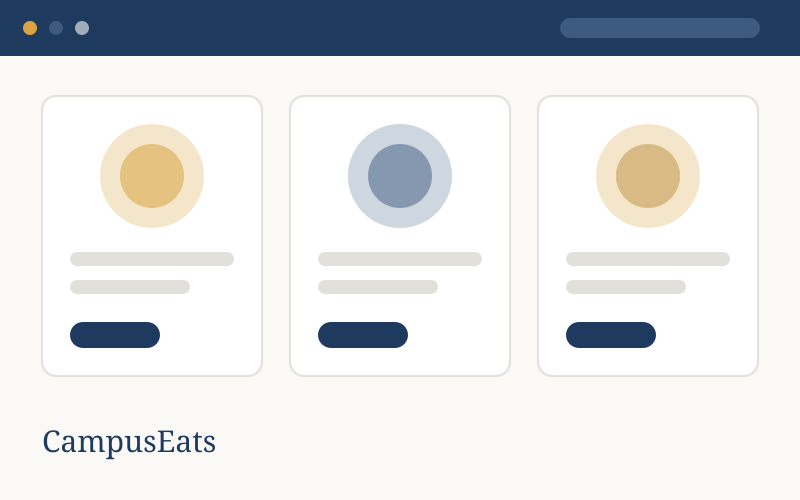

CampusEats
A mobile-first menu site for the food vendors around my estate in Abuja. Classmates and neighbours can check each vendor’s daily menu and prices before stepping out — the vendors update a simple shared sheet, and the site reflects it. My first fully responsive build.